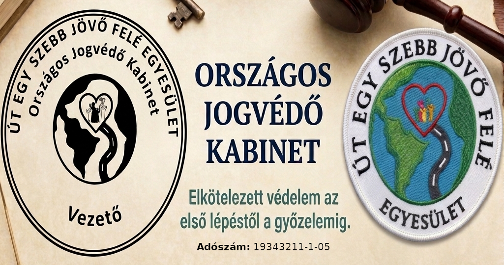

Azért vagyunk itt, hogy közérthető tanácsadással, hivatalos beadványok készítésével és teljes körű érdekképviselettel segítsünk Önnek törvényes jogai védelmében.
Az Út Egy Szebb Jövő Felé Egyesület Országos Jogvédő Kabinetje kiemelt figyelmet fordít a kiszolgáltatott vagy nehéz helyzetbe került emberek támogatására.
Hivatalos iratok és beadványok készítése:
Keresetlevelek, hatósági észrevételek, felszólítások, valamint végrehajtási kifogások szakszerű megszövegezése.
Peren kívüli egyezségek elősegítése:
Aktív közreműködés és hivatalos szervezeti megkeresések adósságkezelési, kölcsönügyi és egyéb vitás kérdések méltányos, peren kívüli lezárása érdekében.
A jogsegélynyújtás olyan szakmai segítségnyújtás, amely támogatja az embereket jogaik és kötelezettségeik pontos megértésében, valamint azok hatékony érvényesítésében és védelmében.
Az igazi bölcsesség a legoptimálisabb megoldás megtalálásához szükséges, ezért a jogvédői tanácsadás mellett kiemelten érdemes igénybe venni a professzionális érdekképviselet szolgáltatását is a jogok hatékony védelme érdekében.